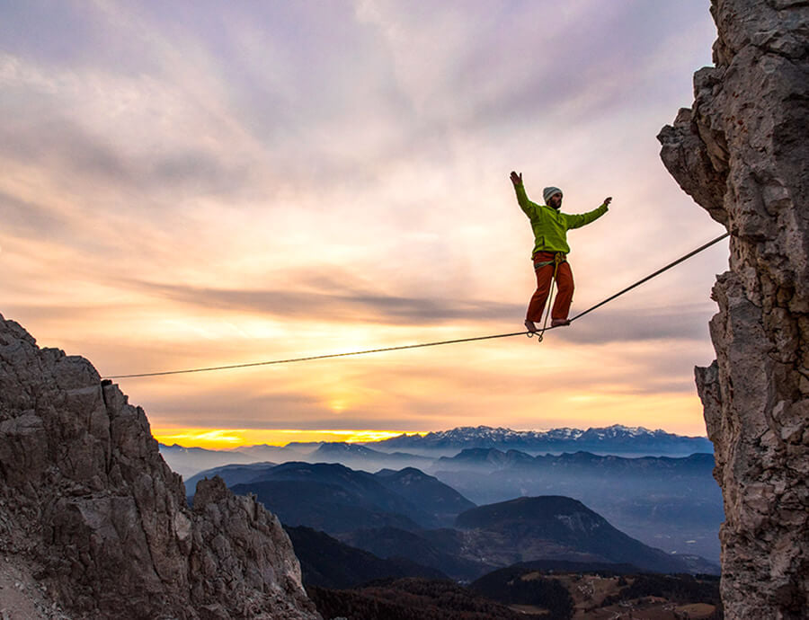

A slackline egy extrém sport, mely nagy egyensúlyérzéket igényel. A kötél anyaga általában nejlon vagy poliészter, két szilárd pont közé feszítik ki. A slackline-ozás eltér a kötéltánctól, mert ebben az esetben nincs olyan mereven kifeszítve a kötél, sokkal rugalmasabb, vissza lehet róla pattanni, mintha trambulint használnánk. Többféleképpen ki lehet feszíteni, attól függően, épp mire akarjuk azt használni: egyszerű sétálásra, vagy valamilyen mutatványokat is szeretnénk véghez vinni. Szövéstechnikájának köszönhetően a kötél nagyon lapos, így a talp szépen rásimul, ellentétben a sima kötéllel.
